We’re going to take logs
The natural log is the inverse function for the exponential function:
\[ \quad \log(e^x) = x \quad \text{for} \quad x>0 \]
. . .
(Natural) Log rules:
1. Product rule: \(\log(AB) = \log(A) + \log(B)\).
. . .
2. Quotient rule: \(\log(A/B) = \log(A) - \log(B)\).
. . .
3. Power rule: \(\log(A^B) = B \cdot \log(A)\).
. . .
4. Derivative: \(f(x) = \log(x)\) => \(f'(x) = \dfrac{1}{x}\).
. . .
Note: \(\log(e) = 1\), \(\log(1) = 0\), and \(\log(x)\) is undefined for \(x \leq 0\).
Log-Linear model
Nonlinear Model
\[ Y_i = \alpha e^{\beta_1 X_i}v_i \]
- \(Y > 0\), \(X\) is continuous, and \(v_i\) is a multiplicative error term.
- Cannot estimate parameters with OLS directly.
. . .
. . .
Logarithmic Transformation
\[ \log(Y_i) = \log(\alpha) + \beta_1 X_i + \log(v_i) \]
Redefine \(\log(\alpha) \equiv \beta_0\), \(\log(v_i) \equiv u_i\).
Transformed (Linear) Model
\[ \log(Y_i) = \beta_0 + \beta_1 X_i + u_i \]
Can estimate with OLS, but interpretation changes.
Log-Linear model
Regression Model
\[ \log(Y_i) = \beta_0 + \beta_1 X_i + u_i \]
Interpretation
- A one-unit increase in the explanatory variable increases the outcome variable by approximately \(\beta_1\times 100\) percent, on average.
- Ex.
-
If \(\log(\hat{\text{Pay}_i}) = 2.9 + 0.03 \cdot \text{School}_i\), then an additional year of schooling increases pay by approximately 3 percent, on average.
Log-Linear model
Derivation Consider the log-linear model
\[ \log(Y) = \beta_0 + \beta_1 \, X + u \]
and differentiate
\[ \dfrac{dY}{Y} = \beta_1 dX \]
. . .
Marginal change in \(X\) (\(dX\)) leads to a \(\beta_1 dX\) proportionate change in \(Y\).
- Multiply by 100 to get the percentage change in \(Y\).
Log-Linear Ex
\[ log(\hat{Y}_{i}) = 10.02 + 0.73 \cdot X_{i} \]
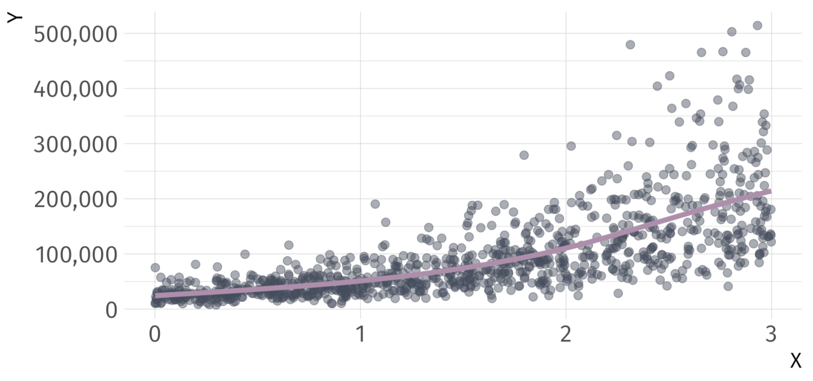
Log-Linear Ex
\[ log(\hat{Y}_{i}) = 10.02 + 0.73 \cdot X_{i} \]
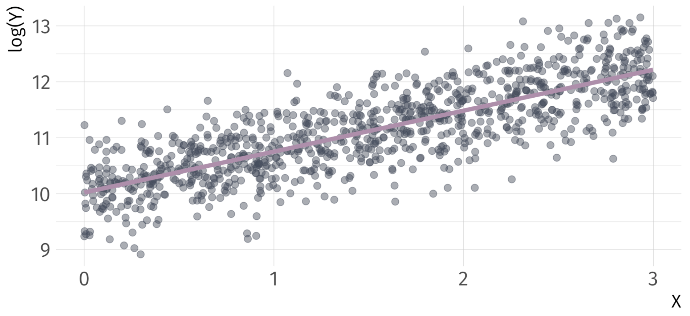
Log-Linear
Note: If you have a log-linear model with a binary indicator variable, the interpretation of the coefficient on that variable changes. Consider
. . .
\[ \log(Y_i) = \beta_0 + \beta_1 X_i + u_i \]
for binary variable \(X\).
. . .
Interpretation of \(\beta_1\):
- When \(X\) changes from 0 to 1, \(Y\) will increase by \(100 \times \left( e^{\beta_1} -1 \right)\)%
- When \(X\) changes from 1 to 0, \(Y\) will decrease by \(100 \times \left( e^{-\beta_1} -1 \right)\)%
Log-Linear Ex
Take a binary explanatory variable: trained
trained = 1if employee \(i\) received trainingtrained = 0if employee \(i\) did not receive training
| Term | Estimate | Std. Error | Statistic | P-value |
|---|---|---|---|---|
| Intercept | 9.94 | 0.0446 | 223 | 0 |
| Trained | 0.557 | 0.0631 | 8.83 | 4.72e-18 |
Q. How do we interpret the coefficient on trained?
. . .
A1: Trained workers are 74.52 percent more productive than untrained workers.
. . .
A2: Untrained workers are 42.7 percent less productive than trained workers.
Log-Log model
Nonlinear Model
\[ Y_i = \alpha X_i^{\beta_1}v_i \]
- \(Y > 0\), \(X > 0\), and \(v_i\) is a multiplicative error term.
- Cannot estimate parameters with OLS directly.
. . .
Logarithmic Transformation
\[ \begin{align*} \log(Y_i) = \log(\alpha) +& \beta_1 \log(X_i) \\ +& \log(v_i) \end{align*} \]
- Redefine \(\log(\alpha) \equiv \beta_0\), \(\log(v_i) \equiv u_i\).
Transformed (Linear) Model
\[ \log(Y_i) = \beta_0 + \beta_1 \log(X_i) + u_i \]
Can estimate with OLS, but interpretation changes.
Log-Log regression model
\[ \log(Y_i) = \beta_0 + \beta_1 \log(X_i) + u_i \]
Interpretation
- A one-percent increase in the explanatory variable leads to a \(\beta_1\)-percent change in the outcome variable, on average.
- Often interpreted as an elasticity.
- Ex.
-
If \(\log(\widehat{\text{Quantity Demanded}}_i) = 0.45 - 0.31 \cdot \log(\text{Income}_i)\), then each one-percent increase in income decreases quantity demanded by 0.31 percent.
Log-Log derivation
Consider the log-log model
\[ \log(Y_i) = \beta_0 + \beta_1 \log(X_i) + u \]
and differentiate
\[ \dfrac{dY}{Y} = \beta_1 \dfrac{dX}{X} \]
A one-percent increase in \(X\) leads to a \(\beta_1\)-percent increase in \(Y\).
- Rearrange to show elasticity interpretation:
\[ \dfrac{dY}{dX} \dfrac{X}{Y} = \beta_1 \]
Log-Log Example
\[ log(\hat{Y}_{i}) = 0.01 + 2.99 \cdot log(X_{i}) \]
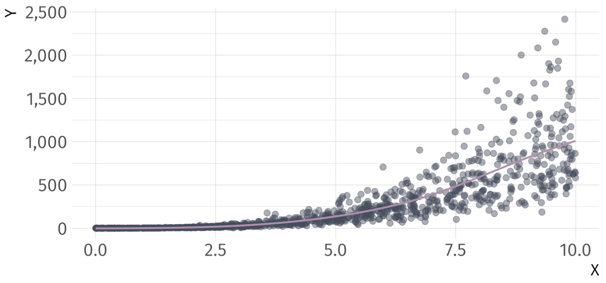
Log-Log Example
\[ log(\hat{Y}_{i}) = 0.01 + 2.99 \cdot log(X_{i}) \]
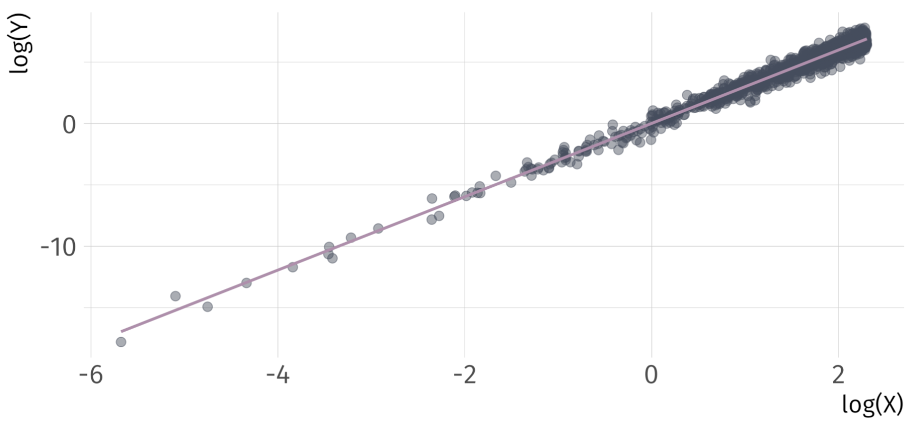
Linear-Log Model
Nonlinear Model
\[ e^{Y_i} = \alpha X_i^{\beta_1}v_i \]
- \(X > 0\) and \(v_i\) is a multiplicative error term.
- Cannot estimate parameters with OLS directly.
. . .
Logarithmic Transformation
\[ Y_i = \log(\alpha) + \beta_1 \log(X_i) + \log(v_i) \]
Redefine \(\log(\alpha) \equiv \beta_0\), \(\log(v_i) \equiv u_i\).
Transformed (Linear) Model
\[ Y_i = \beta_0 + \beta_1 \log(X_i) + u_i \]
Can estimate with OLS, but interpretation changes.
Linear-Log Model
Regression Model
\[ Y_i = \beta_0 + \beta_1 \log(X_i) + u_i \]
Interpretation
- A one-percent increase in the explanatory variable increases the outcome variable by approximately \(\beta_1 \div 100\), on average.
- Ex.
-
If \(\widehat{(\text{Blood Pressure})_i} = 150 - 9.1 \log(\text{Income}_i)\), then a one-percent increase in income decrease blood pressure by 0.091 points.
Linear-Log derivation
Consider the log-linear model
\[ Y = \beta_0 + \beta_1 \log(X) + u \]
and differentiate
\[ dY = \beta_1 \dfrac{dX}{X} \]
. . .
A one-percent increase in \(X\) leads to a \(\beta_1 \div 100\) change in \(Y\).
Linear-Log Ex
\[ \hat{Y}_{i} = 0 + 0.99 \cdot log(X_{i}) \]
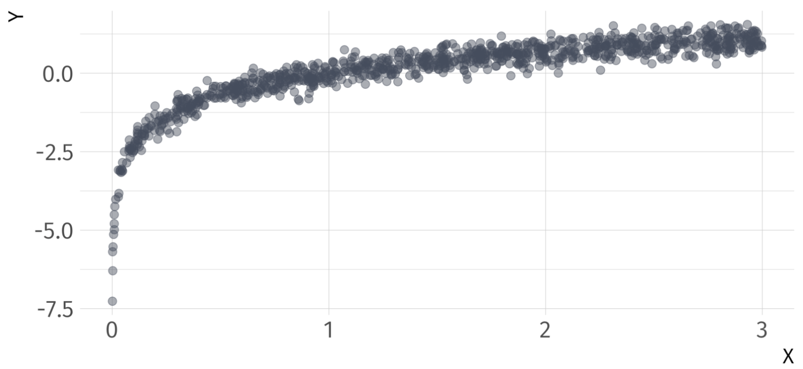
Linear-Log Ex
\[ \hat{Y}_{i} = 0 + 0.99 \cdot log(X_{i}) \]
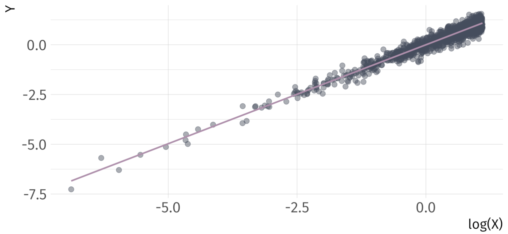
(Approximate) Coefficient Interpretation
For Model Type:
Linear-Linear \(\rightarrow Y_{i} = \beta_{0} + \beta_{1} X_{i} + u_{i}\)
- \(\beta_{1} \rightarrow \Delta Y = \beta_{1} \cdot \Delta X \rightarrow\) A one-unit increase in \(X\) leads to a \(\beta_{1}\)-unit increase in \(Y\)
Log-Linear \(\rightarrow log(Y_{i}) = \beta_{0} + \beta_{1} X_{i} + u_{i}\)
- \(\beta_{1} \rightarrow \% \Delta Y = 100 \cdot \beta_{1} \cdot \Delta X \rightarrow\) A one-unit increase in \(X\) leads to a \(\beta_{1} \cdot 100\)-percent increase in \(Y\)
Log-Log \(\rightarrow log(Y_{i}) = \beta_{0} + \beta_{1} log(X_{i}) + u_{i}\)
- \(\beta_{1} \rightarrow \% \Delta Y = \beta_{1} \cdot \% \Delta X \rightarrow\) A one-percent increase in \(X\) leads to a \(\beta_{1}\)-percent increase in \(Y\)
Linear-Log \(\rightarrow Y_{i} = \beta_{0} + \beta_{1} log(X_{i}) + u_{i}\)
- \(\beta_{1} \rightarrow \Delta Y = (\beta_{1} \div 100) \cdot \% \Delta X \rightarrow\) A one-percent increase in \(X\) leads to a \(\beta_{1} \div\)-unit increase in \(Y\)
So … Can we Do Better?
\[ (\widehat{\text{Life Expectancy})_i} = 53.96 + 8 \times 10^{-4} \cdot \text{GDP}_i \quad\quad R^2 = 0.34 \]
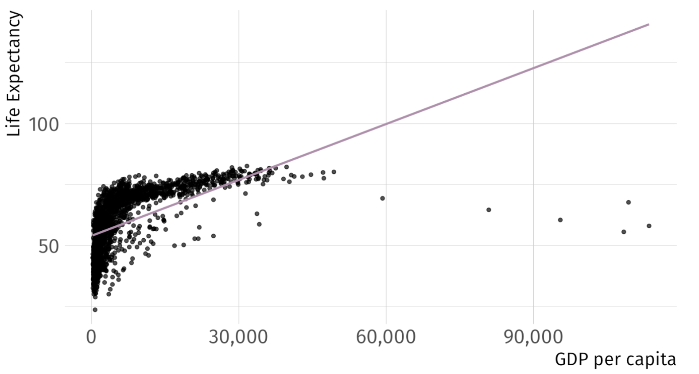
So … Can we Do Better?
\[ log(\widehat{\text{Life Expectancy})_i} = 3.97 + 1.3 \times 10^{-5} \cdot \text{GDP}_i \quad\quad R^2 = 0.3 \]
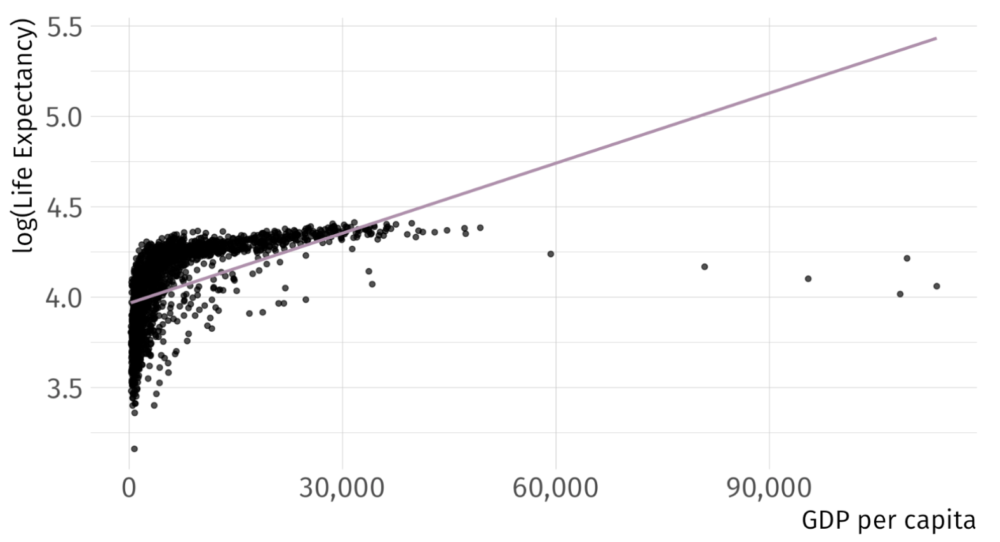
So … Can we Do Better?
\[ log(\widehat{\text{Life Expectancy})_i} = 2.86 + 0.15 \cdot log(\text{GDP}_i) \quad\quad R^2 = 0.61 \]
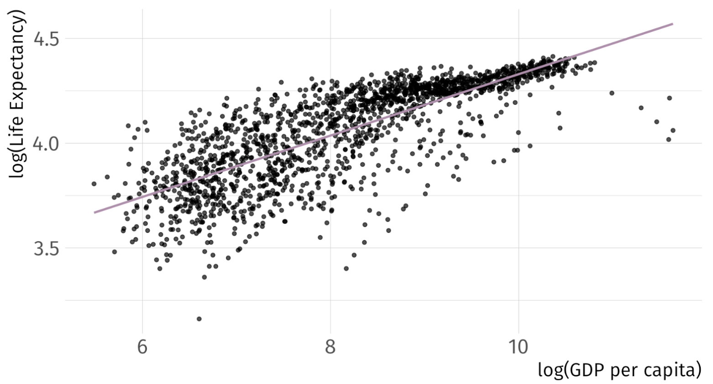
So … Can we Do Better?
\[ (\widehat{\text{Life Expectancy})_i} = -9.1 + 8.41 \cdot log(\text{GDP}_i) \quad\quad R^2 = 0.65 \]
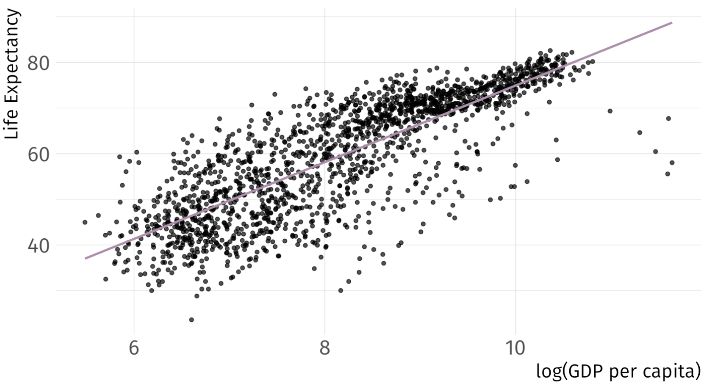
Practical Considerations
Consideration 01 Does your data take negative numbers or zeros as values?
- \(log(0) = \infty\)
Consideration 02 What coefficient intepretation do you want?
- Unit change? Unit-free percentage change?
Consideration 03 Are your data skewed?
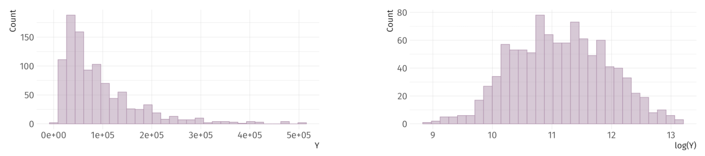